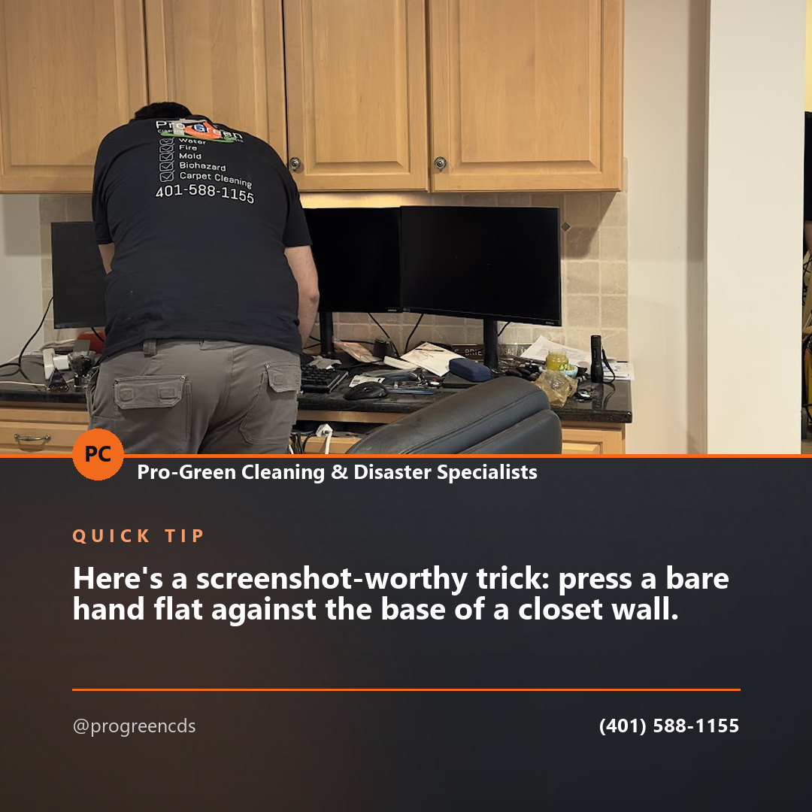
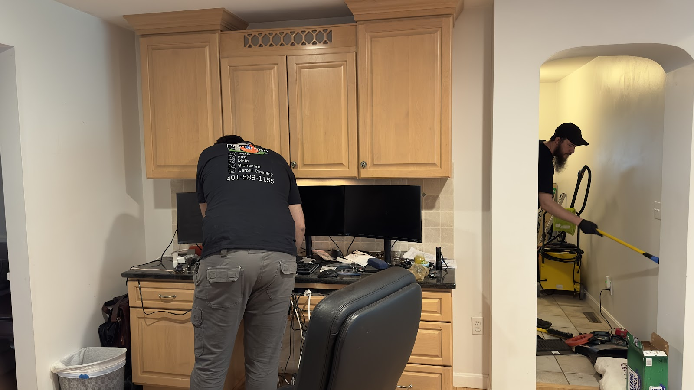
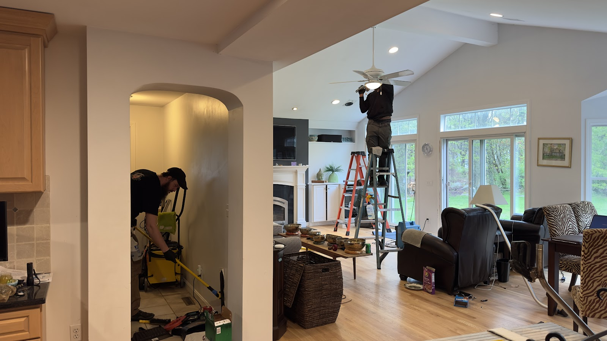
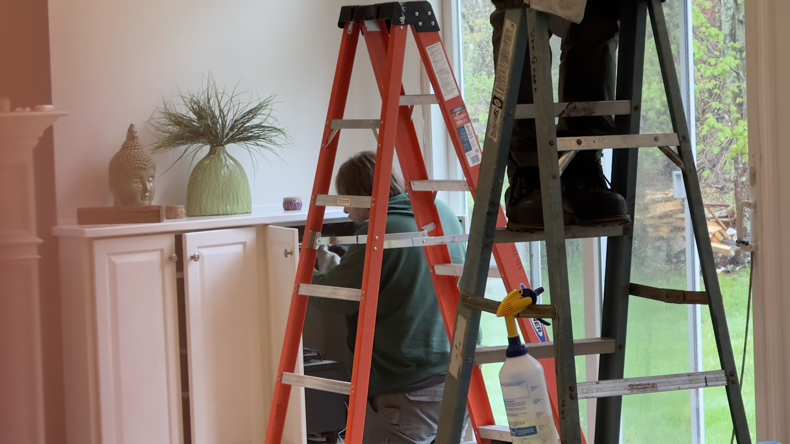
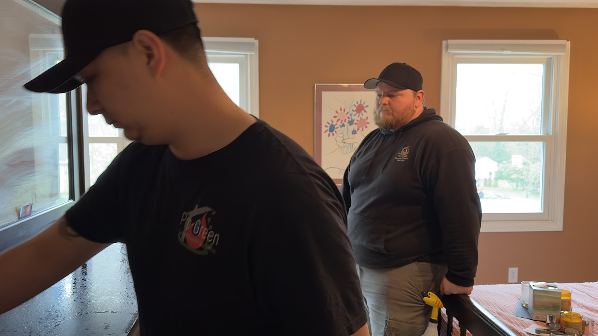

Post idea · Facebook
Here's a screenshot-worthy trick: press a bare hand flat against the base of a closet wall. Cool and slightly damp when the rest is warm often means moisture hiding behind the drywall. Not sure? We'll come look.
Full-service restoration and general contracting for homes and businesses — from water and fire damage to mold, biohazard cleanup, and rebuild.
Pro-Green provides many different home and commercial services. Let us know today how we can help you.
Cleanup, drying, and restoration after leaks, floods, and burst pipes.
Recovery from fire, smoke, and soot damage.
Removal and remediation of mold in residential and commercial spaces.
Specialized cleanup for biohazard situations.
Cleaning services for homes and businesses.
Debris and trash removal.
And more — general contracting to put things back together.
We understand that dealing with an insurance company can be a daunting task, especially in the aftermath of a disaster. Our team of experts has industry knowledge specific to restoration insurance claims and can do the paperwork and correspondence for you.
We'll also work with your insurance adjuster to make sure all the damages are properly documented and that you're getting the full coverage you're entitled to.
A look at some of the jobs we've handled.




Free inspections. Call us or send an email and tell us how we can help.
(401) 588-11554 Smith Street
Warwick, RI 02886
Monday — Friday
8am — 6pm
Available 24/7 for emergency services.
Content